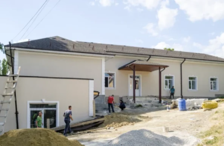
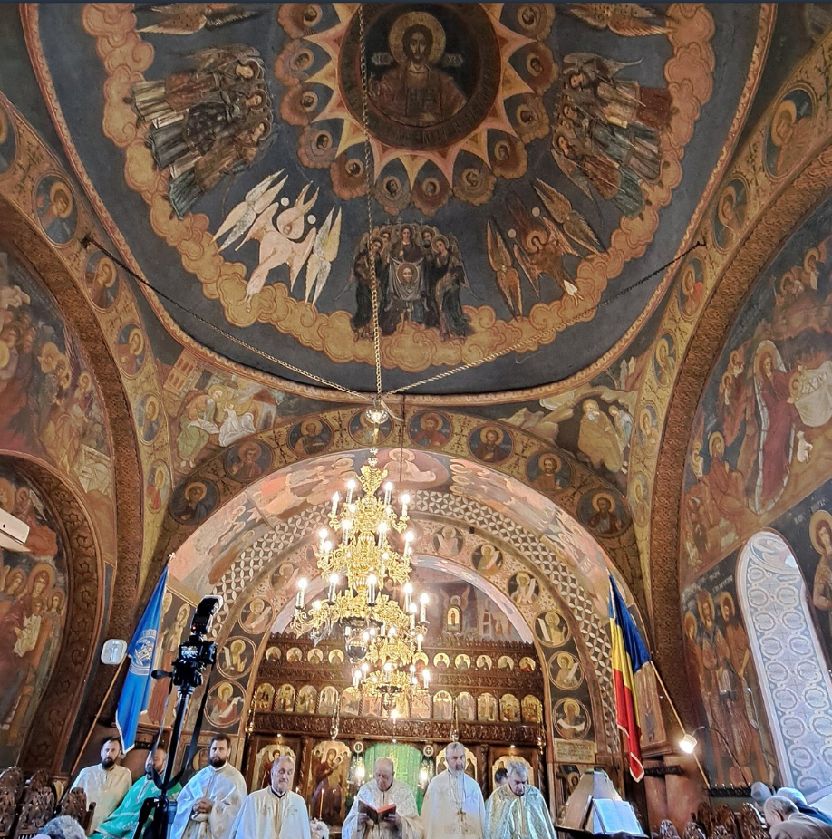
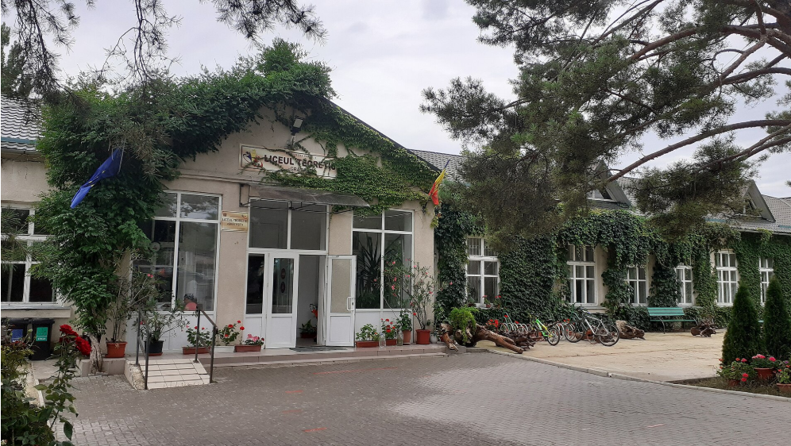

Grătiești,
Moldova
Bună ziua! Eu sunt Anna, un programator web, iar acest website este despre Grătiești! :D Sper că vă place!
Republica Moldova
•
Lângă Chișinău!!
Bună ziua! Eu sunt Anna, un programator web, iar acest website este despre Grătiești! :D Sper că vă place!

Casa de cultură a comunii are este peste 120 de ani! În 2024, a trecut printr-o renovare majoră de 6,3 milioane de lei prin programul Satul European al Moldovei, și clădirea este mai veche decât însăși instituția Casei de Cultură! Deci, a servit ca un important centru cultural pentru sat, găzduind evenimente comunitare și activități culturale.

În 1903, șase creștini locali pe nume Caraman Grigore, Osman Hîncu, Mitrofan Florica, Ion Florica, Eftodie Roibu și Pascal Ioan au decis să construiască o biserică, și Se spune că construcția a costat 60.000 de ruble rusești! Guvernul Moldovei listează biserica ca monument arhitectural, datând din 1904-1908. In august 2026, primăria din Grătiești a publicat o nouă licitație pentru restaurarea bisericii istorice, cu un buget estimat de 10.061.850 MDL. Lucrările planificate sunt programate între 16 septembrie 2026 și 30 decembrie 2029.

Liceul Teoretic Grătiești este pe Ștefan cel Mare 17 și este oficial o instituție de învățământ general! Are un accent surprinzător de puternic pe ecologie. Elevii au lucrat la sortarea deșeurilor, compostare, plantarea copacilor și măsurători de mediu!! Pe lângă materiile obișnuite, școala include printre noile sale direcții educaționale programare web, design grafic, robotică, antreprenoriat și activități de comunicare/inteligență emoțională!